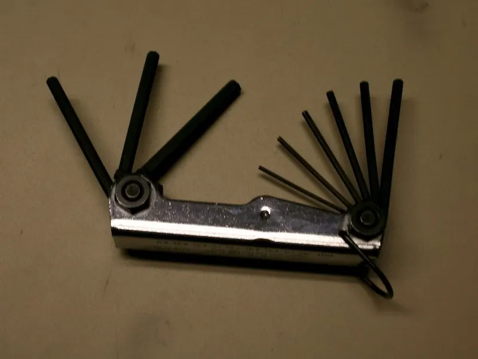
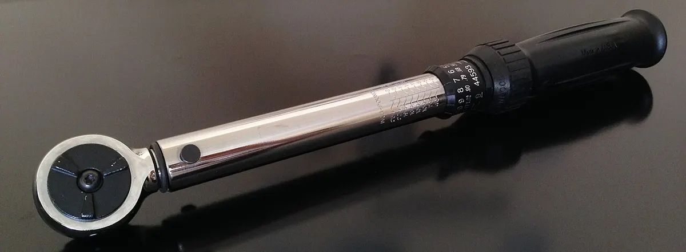
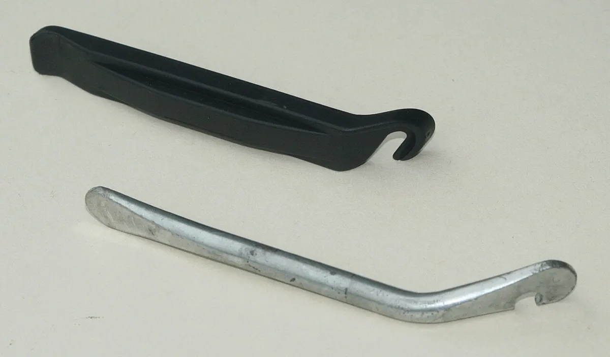
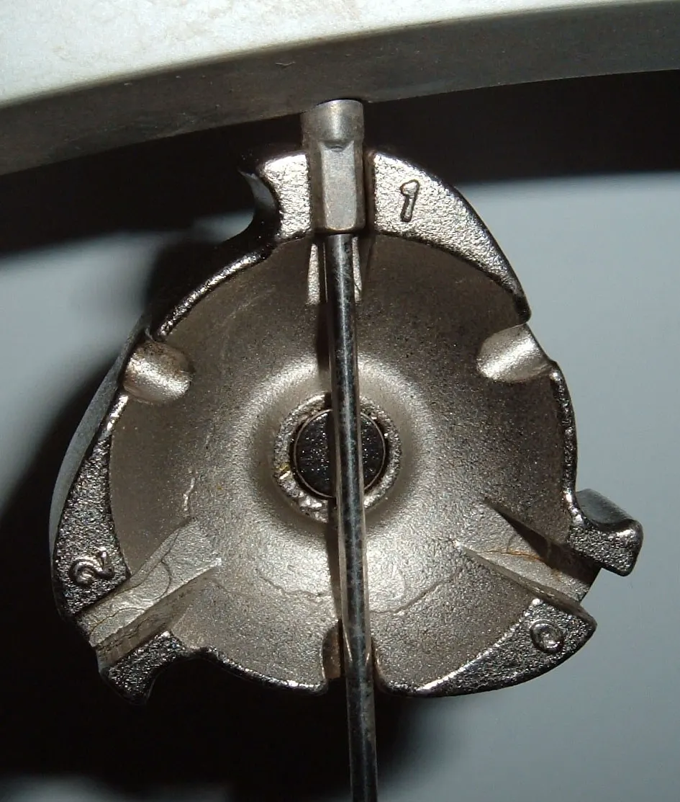
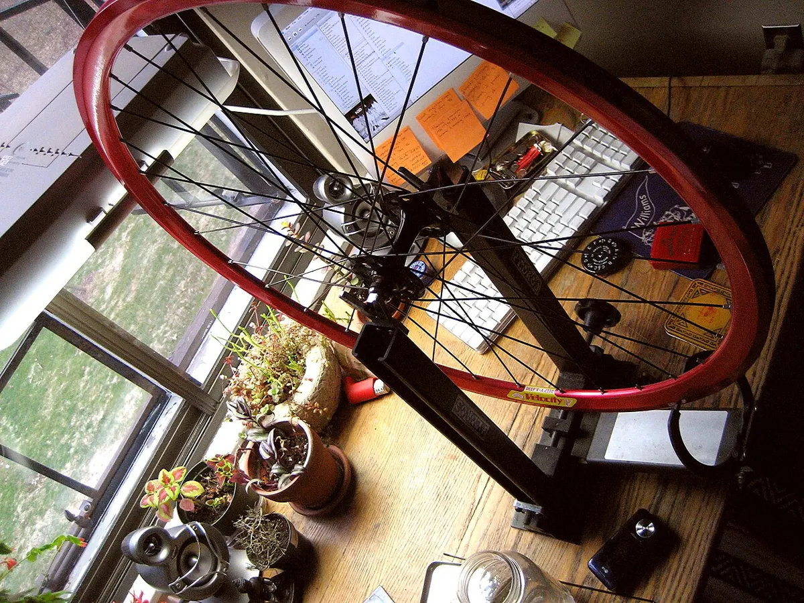
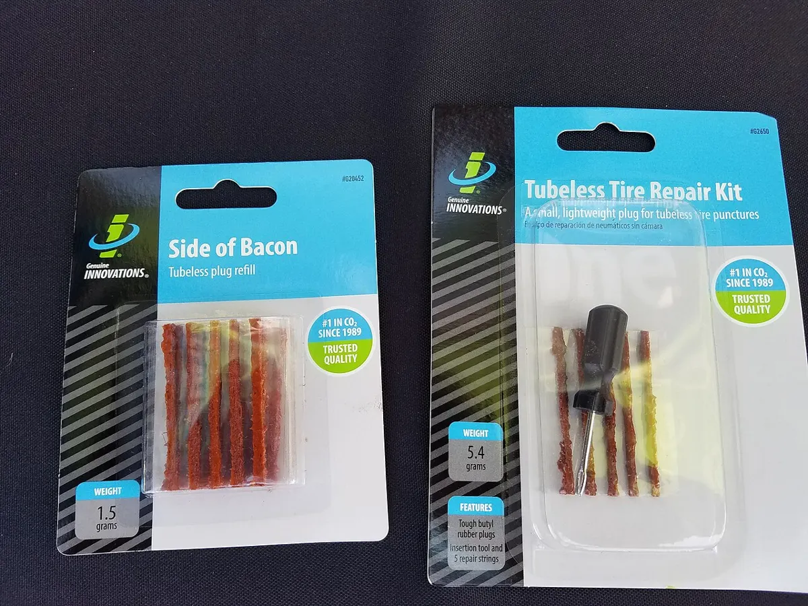
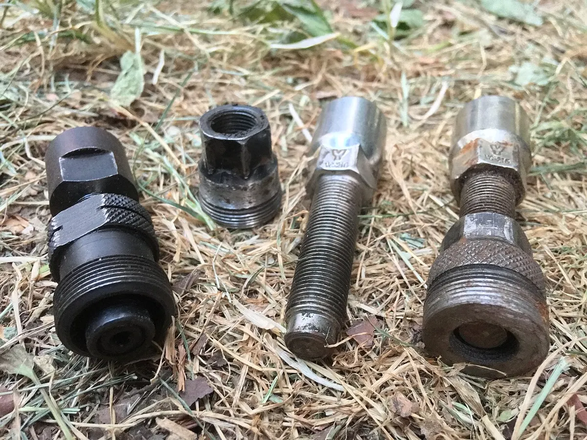
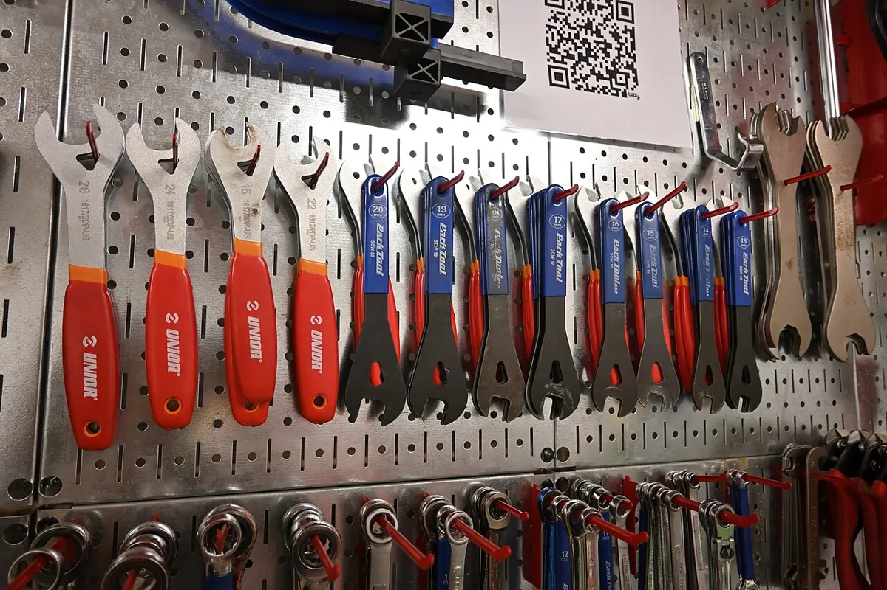

Инструмент
Что нужно для обслуживания велосипеда, как это называется и где применяется. Начните с базового набора — его хватит на большинство инструкций уровня «Легко».
Базовый набор

Шестигранники
Hex keys / Allen keys
Ключи Torx
Torx keys

Динамометрический ключ
Torque wrench
Отвёртки
Screwdrivers
Рожковые и накидные ключи
Open/box wrenches
Плоскогубцы и пинцет
Pliers
Мультитул
Multi-tool
Колёса и шины

Бортировки (монтажки)
Tyre levers
Напольный насос с манометром
Floor pump
Мини-насос
Mini pump
Аптечка (заплатки и клей)
Patch kit

Спицной ключ
Spoke wrench

Стенд для правки колёс
Truing stand
Измеритель центровки (дишинг)
Dishing tool

Ремкомплект для бескамерки (жгуты)
Tubeless plug kit / tyre plugs
Трансмиссия

Выжимка цепи
Chain tool / chain breaker
Калибр износа цепи
Chain checker
Клещи для замка цепи
Master link pliers
Съёмник кассеты (шлицевой ключ)
Cassette lockring tool
Хлыст
Chain whip
Съёмник трещотки
Freewheel remover

Съёмник шатунов
Crank puller / extractor
Ключ для каретки-картриджа
Bottom bracket tool (splined)
Ключ для внешних чашек каретки
External BB cup wrench
Ключ крышки шатуна
Crank arm cap tool
Педальный ключ
Pedal wrench
Тормоза
Тросорез
Cable cutter
Набор для прокачки гидравлики
Bleed kit
Лопатка для разведения поршней
Piston press / pad spreader
Вилка для правки роторов
Rotor truing fork
Рама, колонка, подвеска
Инструмент для правки петуха
Derailleur hanger alignment gauge

Конусные ключи
Cone wrenches
Пресс для рулевых чашек
Headset press
Оправка опорного кольца
Crown race setter
Оправка для якоря
Star nut setter
Насос высокого давления для амортизаторов
Shock pump